Highthroughput sequencing from museum samples
BMS Summer Seminar 2024
Why are museum specimens valuable for DNA?
A global spatio-temporal record of populations and species, spanning 200 years.
useful for studying extinct, extirpated or threatened species/populations
building baselines or study long term changes
metagenomics
vertebrate bias in current musueum-based population genomic studies
What are the issues with historical DNA (hDNA)?
These are mostly similar to ancient DNA (aDNA) but perhaps not as exaggerated.
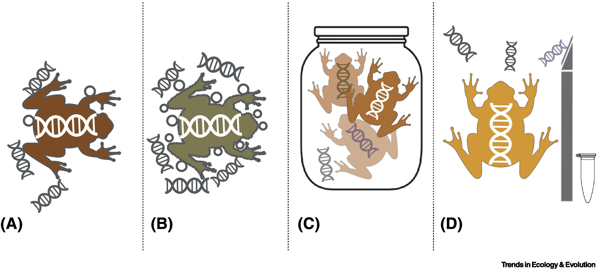 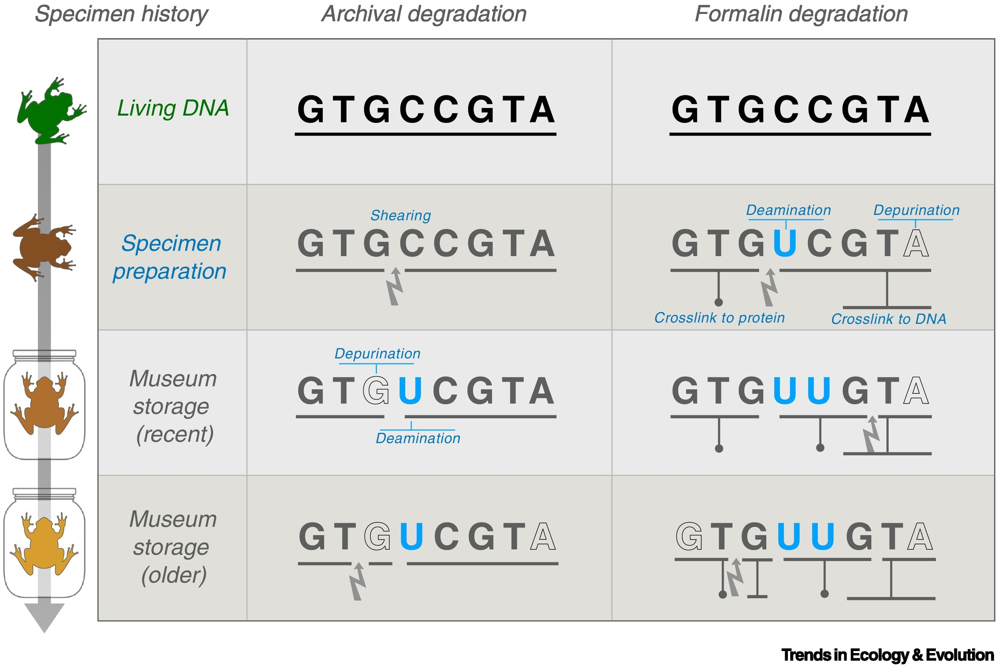
- Contamination - multiple sources
- DNA fragmentation - typically 50 bp fragments
- Deamination at 3’ and 5’ ends
- low yield
- Choice of tissue
Images: Raxworthy & Smith 2021, TREE
Dealing with hDNA extraction/library prep
- Choice of tissue - legs kept curator’s happy, also gave use best libraries
- Contamination - workspace/tools only for museum samples, run & sequence extraction blanks
- Deamination - can be fixed fully or partially fixed with commercially available repair enzymes. Dealt with at computational stage.
- low yield - for our tissue (butterfly legs) a qiagen tissuelyzer prep worked best (further details in Rebecca’s thesis).
- DNA fragmentation - problematic for illumina library preparation - difficult to separate adapter dimers in library prep, use beads for size selection and titration of adapter to reduce adapter contamination
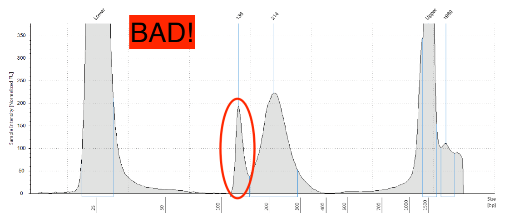
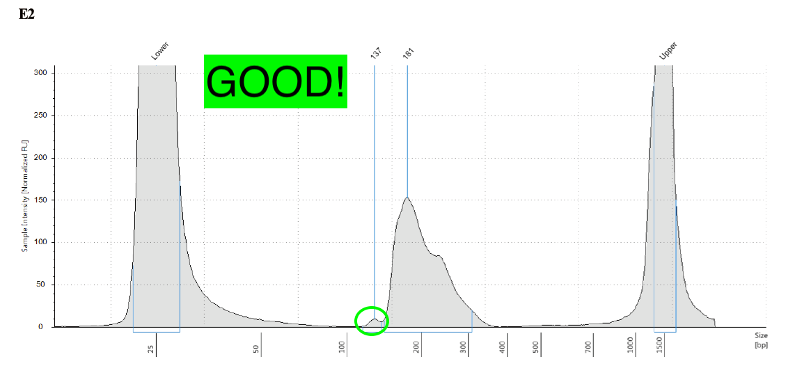
The last days of Aporia crataegi in Britain: evaluating genomic erosion in an extirpated butterfly
A brief introduction to Aporia crataegi (the black-veined white)
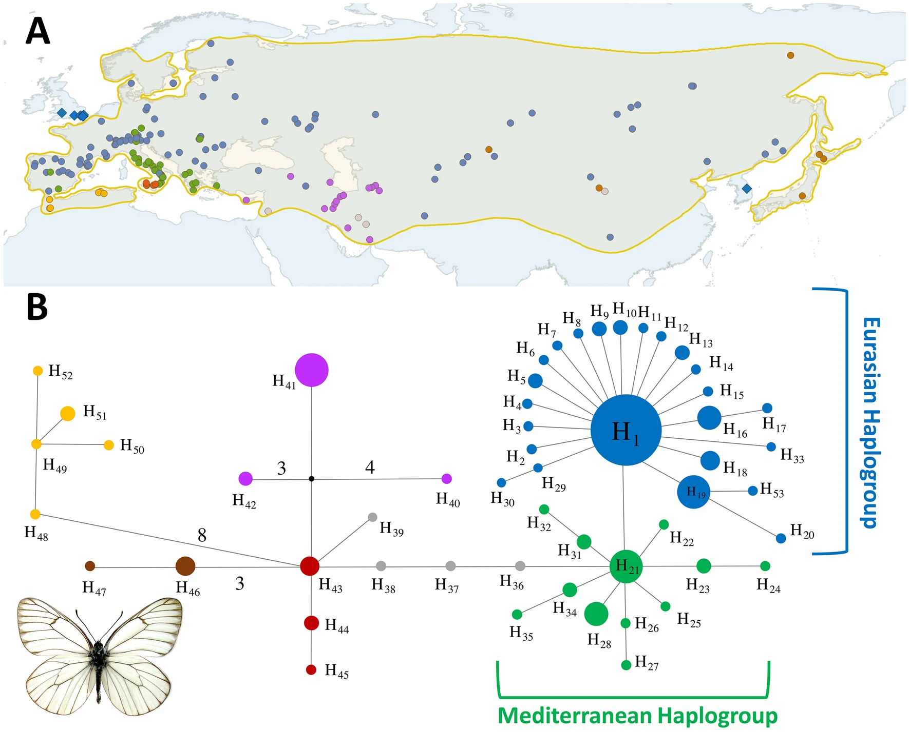 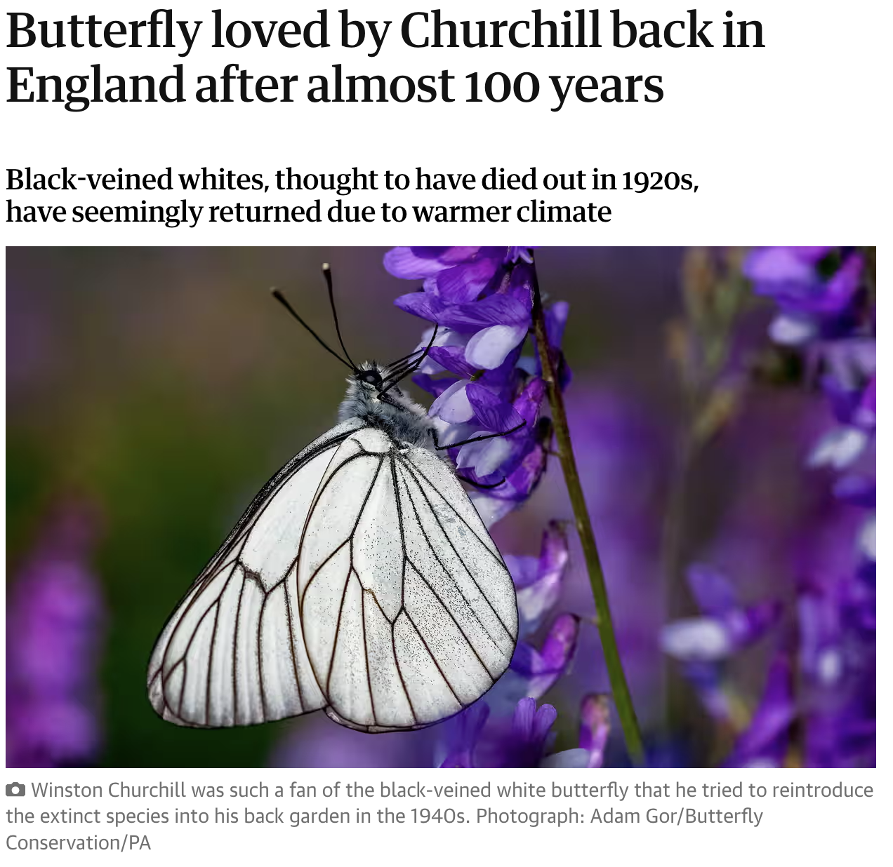
Also extirpated in the Netherlands and South Korea
Images: Todisco et al 2020, Sci. Rep.
The “mysterious” disappearance of Aporia crataegi in Britain
Correspondence in the Entomological journals suggest that the butterfly was already disappearing from the western part of its range. Last sighting in Kent 1925 (Pratt 1983, Entomologist’s Rec. J. Var)
Record of numerous releases within the 19th century - unclear if resident GB population survived into 20th century.
Debate on reasons of extinction:
- Avian predation
- fungal, viral or other pathogen
- Series of unfavorable wet Septembers
“much mystery hangs over this species” - C.G. Barrett, 1893
A genomic perspective on the mysterious disappearcne of Aporia crataegi in Britain
Goals:
Were UK populations of A. crataegi distinct from European stock? Did they survive into the 20th Century?
Was the decline rapid or fast? For the latter we could expect to see no genomic erosion
- Compare relative genomic erosion in UK A. crataegi to mainland European pop. Perform same analysis for a demographically stable species (Polyommatus icarus) to provide some context.
Is there any evidence for a role of pathogen infection in the extirpation of UK butterflies?
Sampling and Methods: Field sampling

- Sampled specimens only where collection year and locality was available
- 1-2 legs per butterfly dissected
Sampling and Methods: Sequencing Library Prep
- DNA extraction:
- one or two legs macerated using Tissuelyser II bead mill (Qiagen) and finished with QIAamp DNA Micro kit (Qiagen)
- Library preparation:
- NEBNext Ultra II DNA Library Prep Kit using a modified CUT&RUN procotol
- Exclusion of adapter dimers using SPRIselect beads and titrating primer content
- 10-12 PCR cycles depending on input template amount
- dual indices
- Sequencing:
- High quality genome assembly and annotation via Darwin Tree of Life
- individual libraries pooled in equimolar ratio
- extraction blanks pooled in 1:10 ratio for controls
- PE150 bp sequencing at Novogene
Sampling and Methods: Data Processing

Sampling and Methods: Data Analysis
Population Structure - plinkPCA and angsdPCA (for low coverage data)
Historical demography - PSMC on highest coverage genomes available
Genetic diversity - individual heterozygosity estimated with angsd
Inbreeding - Runs of homozygosity determined with plinkPCA
Genetic load - predicted LOF, missense and synonymous variants with snpEFF
any statistical analysis is either a t-test or when comparing samples with variable coverage, a linear model with coverage covariate.
Results: GB A. crataegi are distinct from European
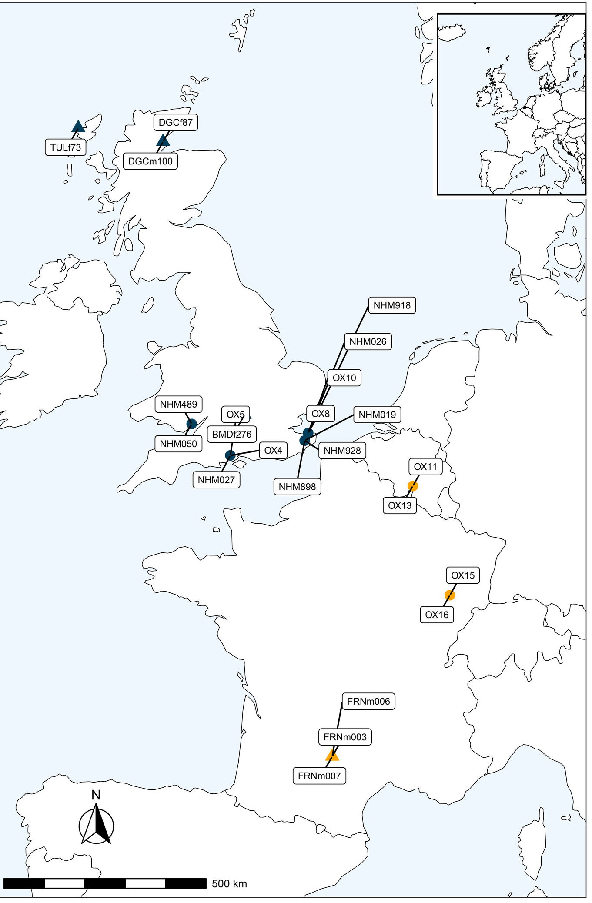
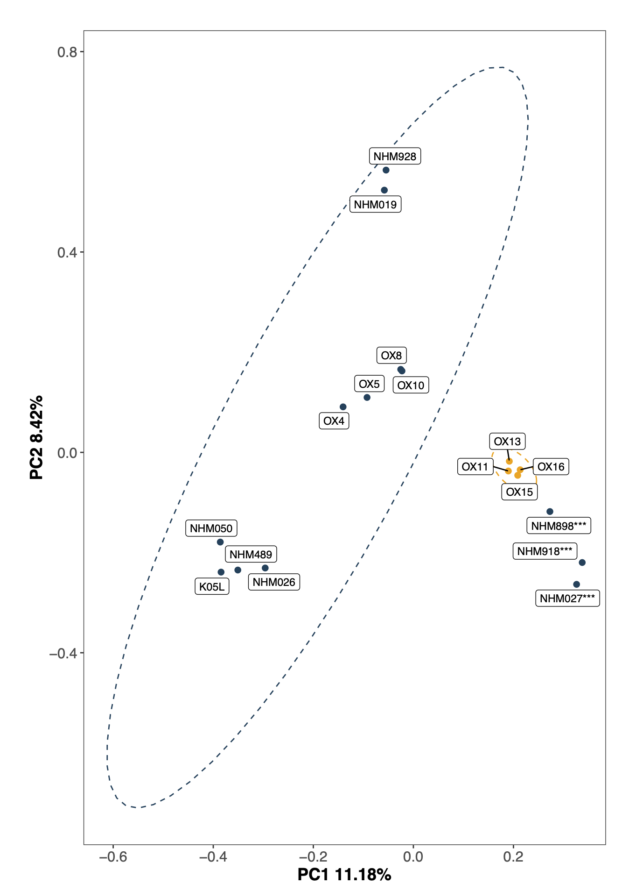
- Isolation by distance pattern within GB
- Evidence of European stock releases in late nineteenth/early 20th century
- Oldest specimen (1924) in our sampling clusters with GB specimens
Results: Evidence of strong bottleneck at time of GB colonisation
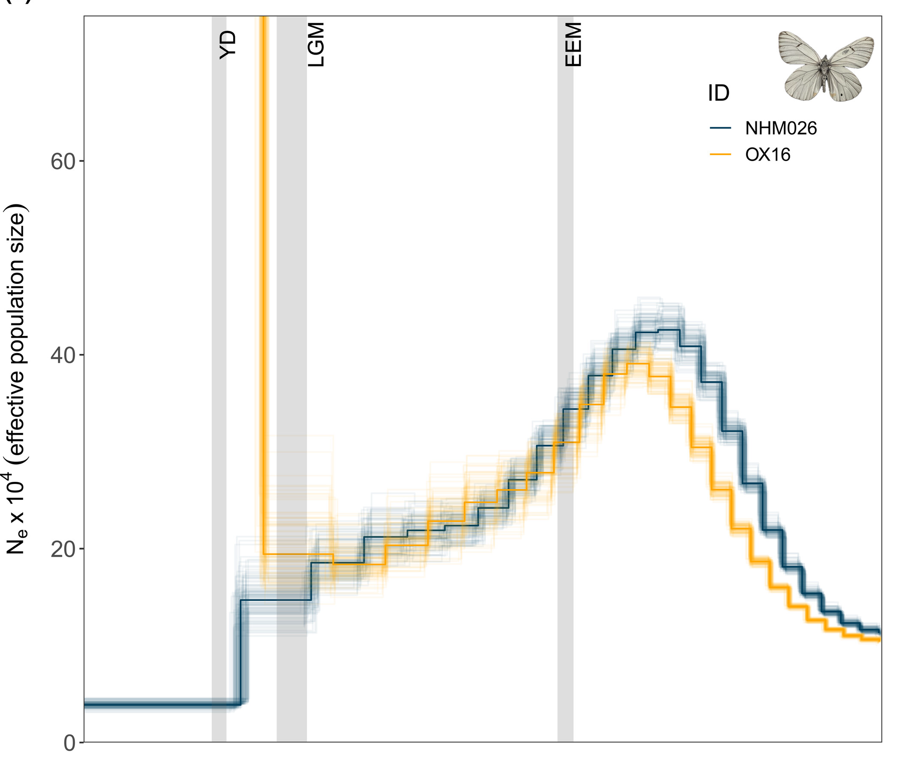
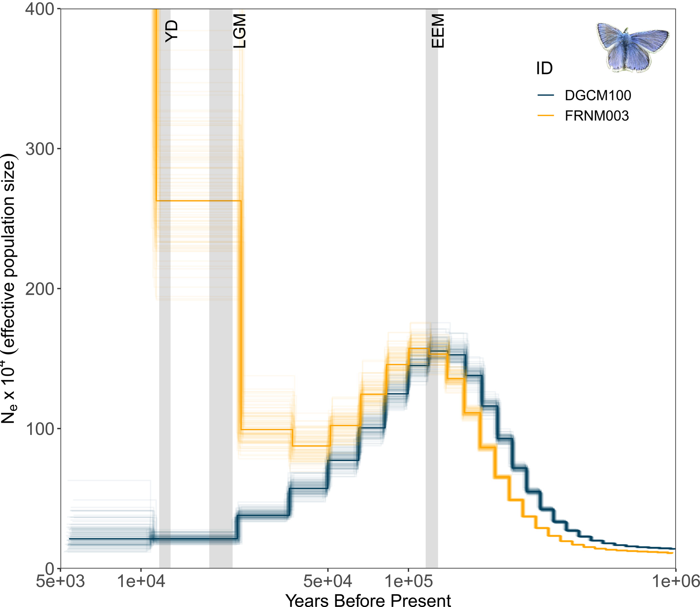
- Bottleneck signal also present in P. icarus but not as strong, potential recovery
- Difference in P. icarus demography potenially due to rapid colonisation?
Results: A. crataegi and P. icarus show similar levels of reduction in Genetic diversity
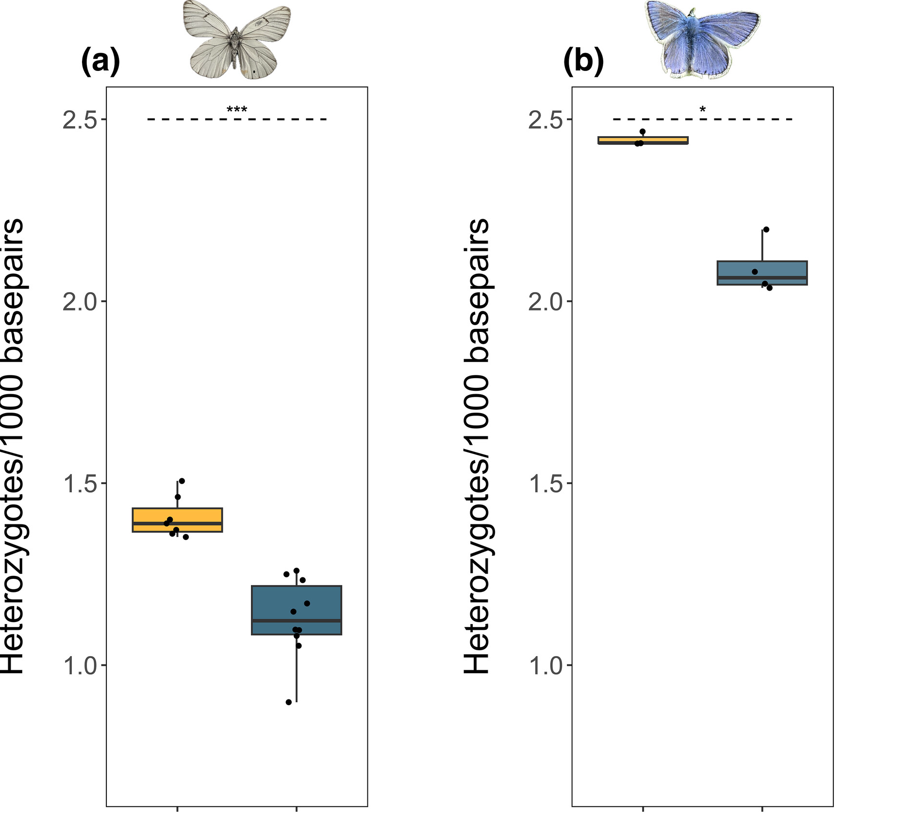
17% reduction in GB A. crataegi and 14% P. icarus relative to EU
Results: Higher levels of inbreeding in GB A. crataegi
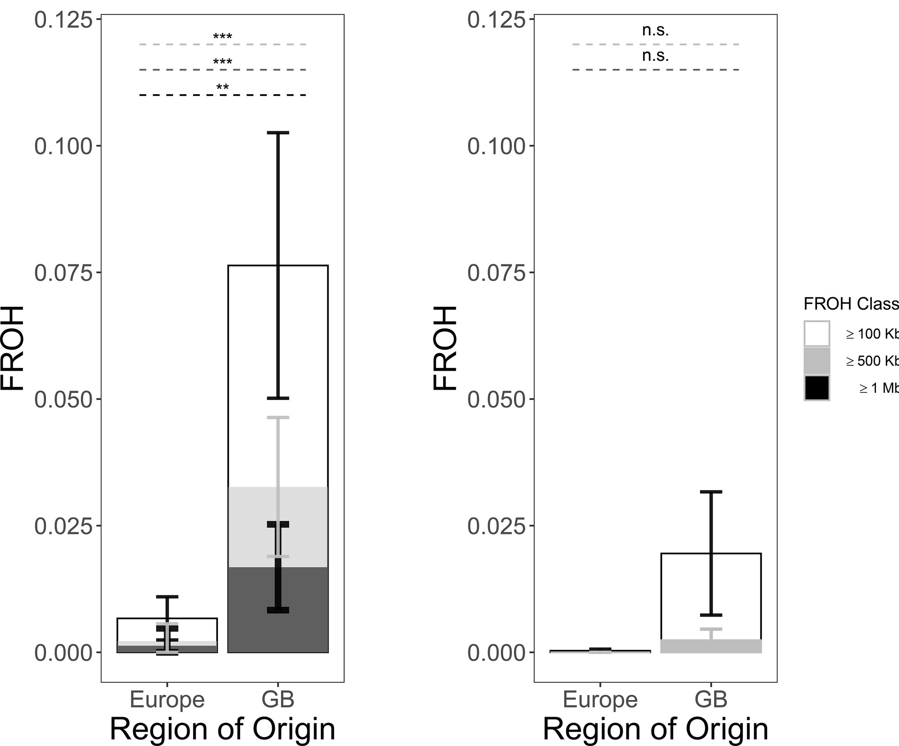
Levels of inbreeding similar to those observed in extinct Glaucopsyche xerces (de-Dios et al. 2023, elife)
Results: Increase in realised genetic load in GB A. crataegi
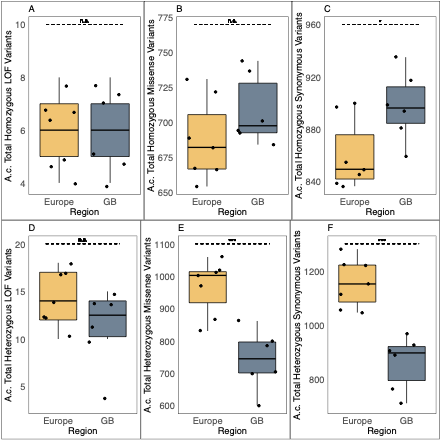
Increase in homozygous synonymous and missense mutations
Conclusions
Resident GB A. crataegi survived into 20th century, however 2/4 20th century samples are likely of EU ancestry
A. crataegi underwent severe bottlneck at time of colonisation and never seems to have recovered
Increases in homozygosity suggest a spasmodic rather than instant decline in the 19th-20th century
Increase in homozygous missense mutations may have made population more prone to extinction
Consistent differences in genomic erosion suggest these metrics could be helpful to monitor or identify threatened insect populations/species with a small number of individuals.
What was the ultimate cause of the regional extinction?
- at least two other Butterfly species disappeared from the UK around the same time
Further work: Metagenomics
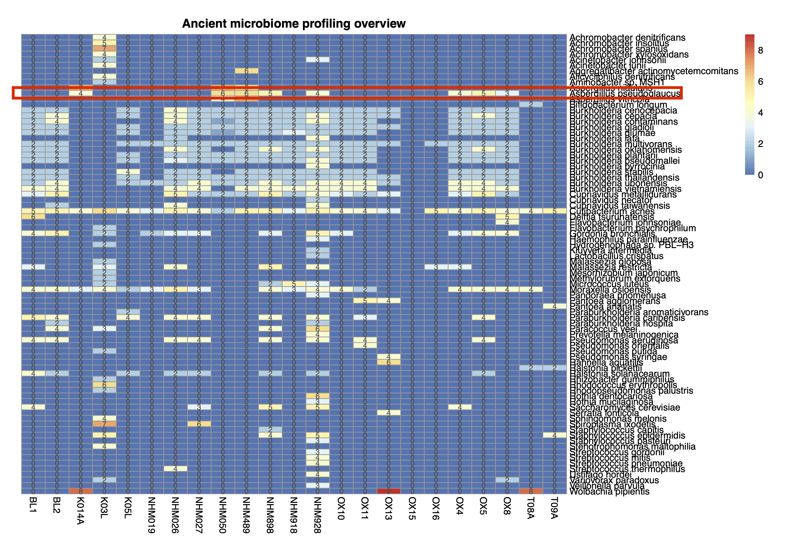
Aspergillus sp. are known to be entomopathogenic but they are quite common and potentially might be perimortem or postmortem contamination
more work needed
The future: Functional Genomics in museum specimens
- Genome-wide methylation is possible from veretbrate museum specimens

Acknowledgements

Rebecca Whitla (PhD student)
Collaborators:
Prof Tim Shreeve
Dr. Casper Breuker
Dr. Korneel Hens
Geoff Martin (NHM, London)
Dr. James Hogan (OUMNH, Oxford)
Other:
Kornad Lohse and Darwin Tree of Life
Funding:
Nigel Groome Studentship to RW by Dept. of BMS, Oxford Brookes University
More Info:
Lab: saadarif.github.io
the ‘scrolltelling’ experience: saadarif.github.io/BVW-LastDays
email sarif@brookes.ac.uk
What is Genomic Erosion and why it matters?
The loss of genetic fitness in small populations due to a shrinking ‘gene pool’, but measured by genetic variation
The promise of conservation genomics lies in the link between genomic variation and genetic fitness, as the latter is potentially measurable
- lack of knowledge is more acute for invertebrates! Evaluating genomic erosion in inverterbates with differing conservation status could improve our understanding and application of conservation genomics
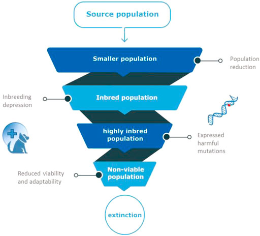
Images: Bosse & Loon 2022, Fron. Gen.
Results: overall increase in shared derived synonymous and missense mutations n GB A. crataegi
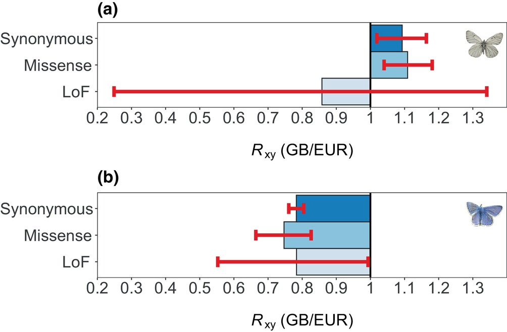
Still cannot detect difference in LOF mutations